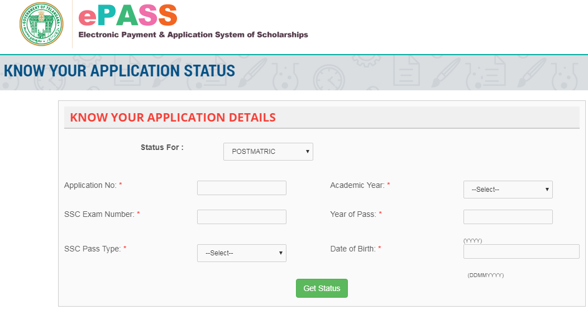

TS ePASS 2021 2022: The scholarships in Telangana state are intended for learners who are a member of the education system. Online Pre Matric, Post Matric Scholarships disbursements through ePass application is one of the important welfare measures of the Government of Telangana which is aimed at the educational upliftment of Students, initiated by the Department of Backward Class Welfare. The system links all welfare departments, treasury, Colleges, and Banks to disburse scholarships. Students can check the TS Scholarship Status TS State from here.
Electronic Payment and Application System of Scholarships is a dedicated online gateway for scholars of Telangana to use for various scholarships and plans administered by the Government of Telangana. Bestowed with many awards like Skoch Platinum Smart Governance Award 2017, Skoch Order-of-merit in Top-200 Smart Governance Projects in India, CSI-Nihilent, e-Governance Award: 2015-16 Appreciation for Sustenance Category and CSI-Nihilent, e-Governance Award: 2010-11 Project Category G2C – Award of Excellence. Check TS EAMCET 2021 Dates from here. The Telangana ePASS website has made the scholarship application and payment process easier and more comfortable. It links all the health and welfare authorities, banks, colleges, erc., to ensure hassle-free payment of scholarships.
It attracts the scholarship schemes for students who belong to SC, ST, BC, EBC, Minority and Disabled categories. Some of the famous scholarship schemes are listed on the Telangana ePASS website which includes post-matric scholarships, pre-matric scholarships, overseas scholarships, skill up-gradation services, corporate admissions, etc. Read the article moreover to get complete information about the scholarships, their eligibility, awards, application procedure and more. TS ePASS renewal 2019 20 last date is 31st January 2019. Post matric Scholarship for Fresh, Renewal Closing Date is 31st December 2019. Read on to find more about ePASS scholarship Telangana
Latest Update:
Post matric scholarship is opened for Fresh, Renewal Registration 2020-2021. The registration for Pre-Matric and Post-Matric Scholarships for SC/ST/BC/Disabled Welfare for the academic year 2020-21 is open. Apply before 31st May 2021.
Click here to check TS ePASS Scholarships Bank Account Status
Telangana ePASS Overview
| Authority | Government Of Telangana |
| Name Of Scholarship | TS ePASS Scholarship |
| Scholarship System | Electronic Payment & Application System of Scholarships (ePass) |
| Pre-Matric Scholarships for Fresh, Renewal Registration Process | Started |
| Mode Of Scholarship Application | Online |
| State | Telangana |
| Official Site | telanganaepass.cgg.gov.in |
TS ePASS Status 2021
Candidates, who have successfully applied for the TS ePASS Scholarship and filled the application form along with the needed documents can check the status of the application for the scholarship provided by Telangana Board, from time to time, on the university website.
With this, they will be able to trace the progress of their application and can get an approach if they will get the scholarship or not. All they have to do is, use their registration ID and password and submit the details to check the application status. Follow the below steps to check the ePASS Telangana Scholarship Status for different schemes. ePASS status TS check online.
- Visit the particular scholarship notification page, such as Post matric, pre-matric, overseas scholarship, etc. options available at the home page.
- You will be redirected to a new page.
- Click on the “Know your Application Status” or “Status/Upload” button (TS ePASS Scholarship Status).
- Mention the necessary information required and submit the details to get the status.

Andhra Pradesh Students can check AP ePASS from Here.
List of Epass Telangana
Let us discuss here, the list of TSePASS, who provide these scholarships, kind of financial assistance is given to it when to apply for it, etc. in this section. Check the table below for further details.
| Name of the Scholarship | Rewards Provided | Application Duration |
| Telangana Epass Pre-Matric Scholarships For SC/ST/BC/Disabled Welfare | Variable monetary awards | Always available |
| Telangana Epass Post Matric Scholarship (PMS) for SC/ST/BC/Disabled Welfare | Almost like 100% reimbursement in tuition fee (for most of the program). Around INR 20,000 or actual fee (for self-financed courses). |
September-December |
| Mahatma Jyothiba Phule BC/EBC Overseas Vidya Nidhi, Telangana | Around INR 20 Lakh (in two installments) towards fees and living expenses. An educational loan of Rs. 10 Lakh Passage grant and visa fees. |
December-January |
| Chief Minister’s Overseas Scholarship Scheme for Minorities | Around INR 10 Lakh towards living expenses and fees. An educational loan of INR 5 Lakh. |
June and July |
| Ambedkar Overseas Vidya Nidhi for SC, ST Students | Up to INR 10 Lakh towards living expenses and fees. An educational loan of INR 5 Lakh. Passage grant. Visa fees. |
Between August and September, OR Between January and February |
Note: Scholarships are not awarded for training courses like;
- Aircraft Maintenance Engineer’s Courses
- Private Pilot license Courses.
- Courses at Pre-examination Training Centers of all India and State levels.
TS ePASS Important Links
| Know Your Application Number | Click Here |
| Telangana Scholarships | Click Here |
| Post Matric Print Application | Click Here |
| Post Matric Renewal Registrations | Click Here |
| Post Matric Scholarship Services | Click Here |
| Telangana ePASS Status TS | Click Here |
| Pre Matric Scholarship Services | Click Here |
| Pre Matric Print Application | Click Here |
TS ePASS Application Procedure
As you have already given the information on the list of TS ePASS scholarship and their eligibility criteria, now its time to collect the information regarding its application process. Let us now check how to apply for TS ePASS by following these steps given below.
- Visit the official website of TSEPASS Home Page @ https://telanganaepass.cgg.gov.in/epassonlinelinks.do

- Click on the particular scholarship, which you are applying for.
- Click on the “Registration” option to start the new application.
- Fill in the necessary details like student particulars, school/college, bank account details, permanent address, annual income certificate, caste certificate, etc.
- After then, upload a scanned copy of the photo, signature and all supporting documents.
- Check the details again and submit the application.
- After successful submission, the students will receive a TS ePASS application number which they can note down for future references.
Note: Candidates who are applying for scholarship renewal can also follow the same steps as mentioned above. But, first, they should select “renewal registrations” to start the application.
Documents Required for TS ePASS
- Qualifying Exam Mark Sheet
- Category Certificate
- Family Income Certificate
- Bank Passbook
- Fee Receipt Number
- Annual Non Refundable Amount
- Enrollment Number
- Student ID Proof
- Domicile Certificate
- Aadhar Card Number
- Latest Passport Size Photograph
TS ePASS Eligibility
Now, as you are informed of all the list of TS ePASS, let us know further the respective eligibility criteria. Every scholarship has its own eligibility criteria but there is one criterion, which each scholarship has stated, which is, candidates need to be a permanent resident of Telangana state and no candidate is eligible who reside outside the state.
Now let us check the academic qualifications and maximum family income criteria for all the category students required as per the eligibility defined by the conducting Telangana Board.
TS ePASS Pre-Matric Scholarships For SC/ST/BC/Disabled Welfare
- Scholars studying in class 9 and 10 are eligible to apply.
- Minimum attendance should be 75%, at the end of each quarter.
- Annual family income should be;
| For SC/ST and BC/ Minority students of the urban area | Less than INR 2 Lakh |
| For BC/Minority students of rural area | Less than INR 1.5 Lakh |
| For EBC/Disabled students | Less than INR 1 Lakh |
TS ePASS Post Matric Scholarship (PMS) for SC/ST/BC/Disabled Welfare
- The scholarship is available for learners who have qualified class 10 with a minimum of 75% attendance at the end of per quarter.
- All must be persevering studies at post-matriculation level i.e. class 11th to postgraduation.
TS ePASS Mahatma Jyothiba Phule BC/EBC Overseas Vidya Nidhi, Telangana
- Bachelor students ready to pursue postgraduate studies from a university abroad can apply.
- Maximum age limit is 30 years as on 1st July of the year of application.
- Annual family income should be Less than INR 1.5 Lakh (for rural areas) and less than INR 2 Lakh (for urban areas)
- Only applicable to the single child of the family.
- The minimum percentage of marks needed in the institution degree should be 60% in branches like management, engineering, humanities, social sciences, pure sciences, medicine, nursing, and agriculture science.
TS ePASS Chief Minister’s Overseas Scholarship Scheme for Minorities
- The scholarship is available for graduate or postgraduate scholars in branches like management, engineering, social sciences, pure sciences, medicine, nursing, agriculture sciences, and humanities.
- The minimum percentage of scores in the qualifying exam must be 60%.
- The students must be willing to seek a postgraduate or doctoral degree abroad in the USA, UK, Australia, Singapore, and Canada.
- Maximum age limit is 30 years as on 1 July of the year of application.
- Annual family income should be Less than INR 2 Lakh.
TS ePASS Ambedkar Overseas Vidya Nidhi for SC/ST Students
- The scholarship is available for graduate or postgraduate scholars in branches like management, engineering, social sciences, pure sciences, medicine, nursing, agriculture sciences, and humanities.
- The minimum percentage of scores in the qualifying exam must be 60%.
- The students must be willing to seek a postgraduate or doctoral degree abroad in the USA, UK, Australia, Singapore, and Canada.
Maximum age limit is 35 years as on 1 July of the year of advertisement. - Annual family income should be Less than INR 2 Lakh (for SC students) and less than INR 2.50 Lakh (for ST students).
Reason for Rejection of Application
Students application form for scholarships can be rejected for the following condition;
- Not a bonafide student.
- Incorrect caste or Income information.
- Unavailability of caste and Income certificates.
- Incorrect course & year of study.
- Nonsubmission of hard copy of the application.
- If the student is not physically present.
- Student admitted under management quota .
- Incorrect course & year of study.
- Nonsubmission of enclosures.
- Discontinued/Detained students in case of renewals.
- Claiming scholarship for same level courses.
- Previous sanction verification for renewal.
- Not receiving of hard copy for
- Non-receiving of renewal proposal.
- Claiming scholarship for same level courses.
- Not recommended by Field Officer.
TS ePASS Important Instructions
- TS ePASS is fairly available for all the candidates belonging to any of the categories such as General, OBC, SC, ST.
- It is necessary for students to attach a hardcopy of the photocopy of the bank passbook with the application form.
- Registrants must submit the application form in the department concerned, in person and must receive the receipt.
- Candidates must provide their own effective email ID and mobile phone number.
- All the details and documents produced by the candidate must be authentic and real. If the given information is obtained wrong, then the application and data collected will be rejected.
- Suspect applications will not be sent for scholarship and will be discarded at the same time.
- Failed students are not eligible and should not apply for the scholarship.
- Candidates who have applied for the scholarship or willing to apply are suggested to not share their individual details, bank account number, IFSC code, class 10th/12th roll number, password, and other delicate information to anyone.
- Candidates can review their application status from time to time on the official website.
- Candidates are required their ID and password produced at the time of application to see the scholarship status.
- Candidates, those who are already enrolled with the portal have to renew the account by adding the updates. No new registration is required.
- All updates regarding the scholarship are updated on the official portal in a regular interval of time. Candidates are requested to stay in contact for regular updates.
- Candidates are suggested to check the scholarship updates on the portal on a regular basis. They must obey all the instructions timely and carefully so that they cannot miss the chance to get the scholarship.
FAQ’s on TS ePASS
Question 1.
Can a student register after the last date of application?
Answer:
No, students have to register themselves within the given time limit, unless the date is extended by the concerned authority.
Question 2.
Is bank account details necessary?
Answer:
Yes, it is necessary, to receive the scholarship amount and TS ePass account balance check. Students should have an account in any of the nationalized scheduled banks.
Question 3.
How can a student change their bank details, if he/she has already given details while registration on epass website?
Answer:
Any student who wishes to change their bank account details in the epass portal has to submit the original bank documents to the concerned welfare officer who further submits a change request to the PMU.
Question 4.
What is the meaning of verification in the scholarship process?
Answer:
The method of verification is actually meant to check whether the details given in the scholarship form are accurate as per the documents included. The verification is made in two steps particularly college verification and Independent verification.
- College Verification: Here, the college principal has been asked to verify the documents provided by each student with the details in the application form. Once the verification is finished and all details are found correct, he/she would certainly sign the same and send it to the department for confirmation by the verification officer appointed by the District Collector
- Verification by the Verification Officer: the verification officer appointed by the District Collector will conduct physical and documentary verification and submit his report either accepting or rejecting the scholarship application.
- Scrutiny by the Welfare Officer: before each and every application is taken up for permission it is the responsibility of the welfare officer to satisfy himself of the verification by the college principal and the verification officer and finally sanction the scholarship.
Question 5.
What is a post-matric Scholarship (PMS)?
Answer:
A post matric scholarship is granted to students by the welfare departments of the Govt. for allowing eligible students who have passed Class 10th (SSC examination or equivalent to seek post-matric studies such as intermediate, ITI, polytechnic, professional courses, graduate and postgraduate courses, Ph.D., etc.
You can also find more Scholarship Articles for 12th passed, 10th passed Students and many more.